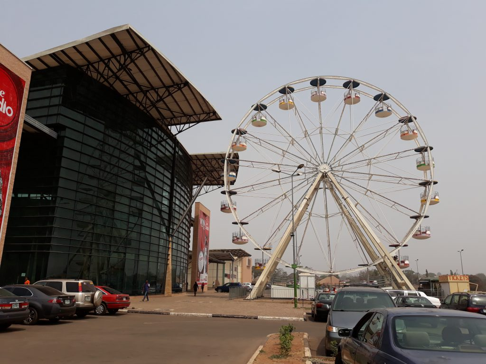
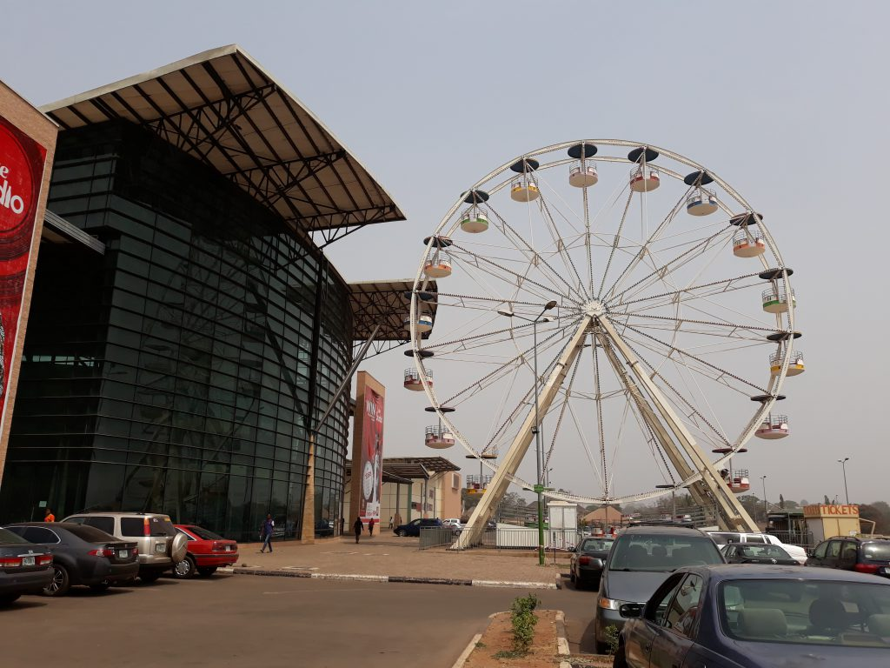

THE FIRST DAY I VISITED SHOPRITE
The first day I visited Shoprite was when I was 4yrs .it happened on the 16th of august 2014.
That day my parents didn’t tell me that they were taking me to Shoprite, immediately when I woke up I wasn’t expecting anything at all from anybody in fact when I woke up everybody was acting natural, I thought that they forgot my birthday funny me I became sad not even knowing that they planned everything. I called it the perfect plan because I didn’t know that they were going to surprise me suddenly the next thing I heard was happy birthday to you they started singing the birthday song I felt astonished occurred to me as if I was going to cry but because I am a boy I wasn’t going to cry
The day that I was going there ,I was so happy and excited because it was the day that I finally had to go to the place I had always wanted to go to, a place where I can have lot’s and lot’s fun.
When I reached there everything felt new for me because things that I had never seen in my life and things that I had always wanted to get were there, I felt as if I was dreaming because it was a big opportunity for me to finally get what I had always wanted. When we entered inside I saw things like candy, a bicycle, even a trampoline so many other things that you will enjoy unlike know in that time things were so fun everybody were happy and exited
That day I saw so many amazing stuffs like the entrance it has a sensor which helps us to enter inside when we reached we first entered the merry go round it just like a giant wheel which spins around slowly and it goes very high and shows you the top of the roof it was so exiting it goes around for five minutes we also saw what they call horsy it turns you around for you to see how the place look like it is really fun and interesting
That day we went to so many shopping places in Shoprite like Kilimanjaro we bought so many types of food like fried rice with turkey and we also ate meat pie lots and lots of them because typically we eat lots and lots of meat pie then we went to the movies and watched frozen we also went to studio 24 where we snapped so many photos we even snapped a family picture another place that we went to is GAMES a place where the most expensive things are being sold the cushion I saw their cost N950,000 for years now no one has bought it. We visited the main store itself we bought things like bread, drinks and fruits so many other things we even bought snacks like shortbread biscuit, Maryland biscuit and chocolate.
When I went to ease myself I got lost and I looked for my parents for almost 30 minutes until they saw me and they were angry with me but they later forgave me because it was my birthday when we went to the place that they play games there was a game which if you sit down on it they would wear you some kind of goggle which if you wear they would make the goggle to be showing a game while you control the game with a joystick while the chair that you are sitting on will be moving so that they will make you to be afraid when me and my sister entered she was scared while I wasn’t afraid at all but rather happy. They gave us a badge so that if they see us they would know that we are now members of the game they also planned a children dace contest we signed in and they noted down our names so we danced so hard that when the time was up I took first my sister took second while another boy called Charles took third, all of us became friends then my dad took us to a place where we could take ice-cream, drink smoothies and have fun. Everything were going well but then I had always wanted to have a saxophone but my mum said that when the time comes that she would provide them
I loved that day because that is when we all have some time to spend happily.